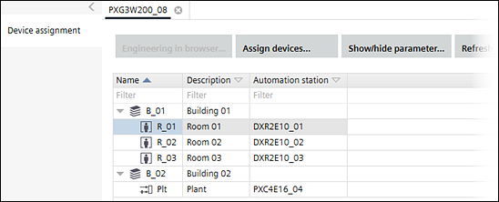
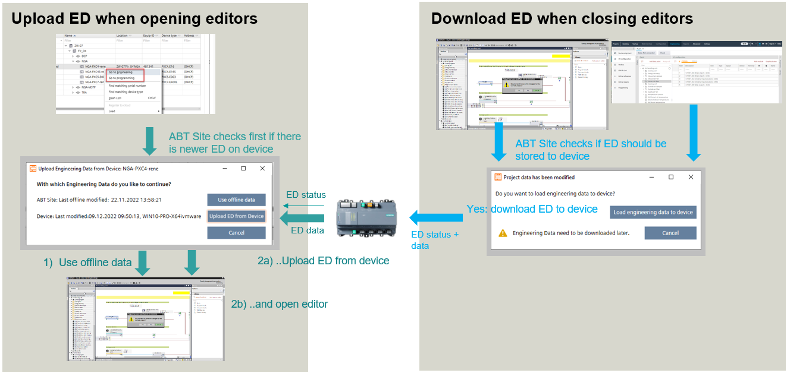

工程
使用工程编辑器将自动化站分配给 Web 服务器等设备，并为系统设计图形。
工程编辑器不适用于 Desigo Room Automation。有关 Desigo Room Automation 的详细信息，请参阅：
Duplicating and programming


PXC4.E16.A 和 PXC7.E400.A 不支持工程、编程和仿真。更多信息请查看设备对应的硬件文档。
Forced upload and download of engineering data concept
IfEnable engineering data on device已激活并且与设备存在在线连接。当您打开编辑器时，ABT Site 会检查设备的状态。如果需要，用户会收到工程数据已更新的通知。该图显示了打开或关闭编辑器时应用程序的行为。

Open an instance of the engineering editor
- A connection to the device is established.
- Go to Building > Building structure or Building > Application & device overview.
- Right-click a device, and select Go to engineering.
- If Enable engineering data on device is enabled, the status between the engineering data and the device is compared. If there are different data statuses, the user is prompted to upload the engineering data:

- Use offline data (Engineering data are taken from ABT Site. The engineering data are not uploaded from the device to ABT Site).
- Upload ED from device (Engineering data are uploaded from the device. ABT Site data will be overwritten by the device data. There is no data merge functionality).
- Cancel
- An instance of the engineering editor opens.
Close an instance of the engineering editor
- A connection to the device is established.
- An instance of the engineering editor is open.
- The Enable engineering data on device is enabled.
- Close the engineering editor.
- The status between the engineering data and the device is compared. If there are different data statuses, the user is prompted to download the engineering data:

- Downoad engineering data to device (Engineering data are downloaded to the device and aligned with the ABT Site data).
Note: This message also appears when you have made changes to the control program after a full/delta load or play/pause but have not downloaded the changes yet. For comparison, only the Last offline change time stamp is taken, and only based on this change is a decision made as to whether the dialog appears.
Example of a project situation after a full load:
- Cancel (The download of the engineering data is skipped and not aligned with ABT Site data).
- An instance of the engineering editor is closed.
这Engineering组件包含以下任务。